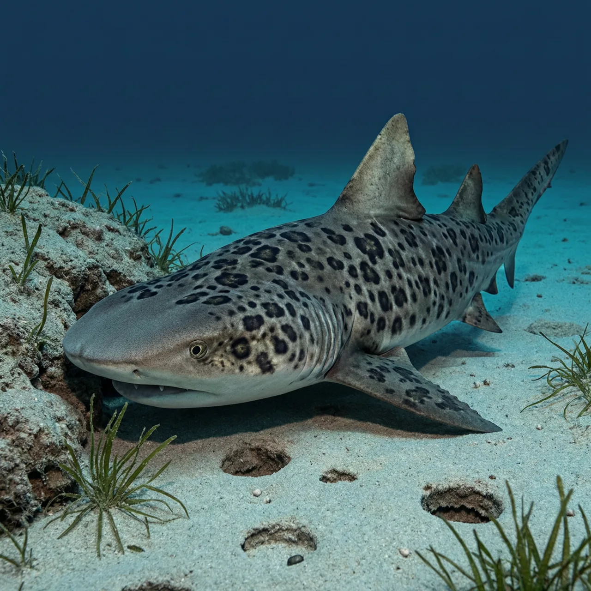
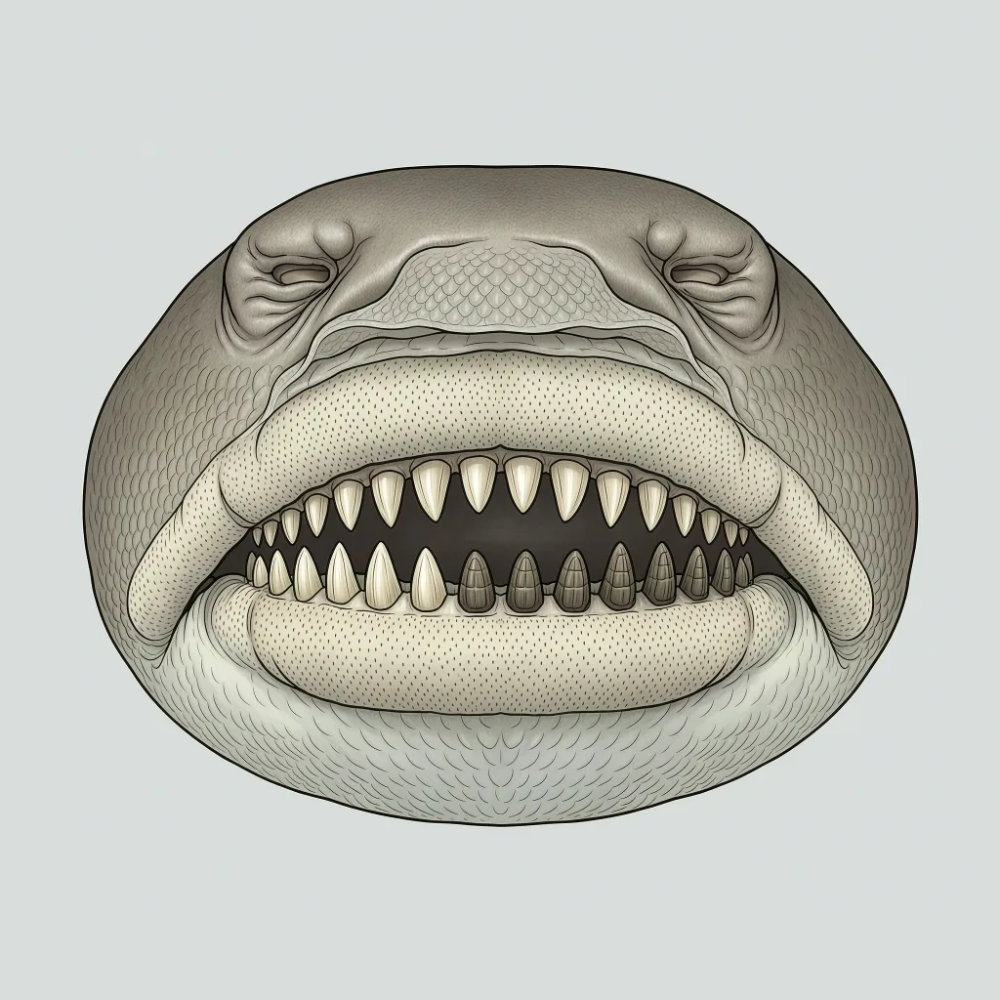

佛氏虎鲨是一种头钝、背鳍前各立硬棘的小型鲨鱼，分布于蒙特雷湾到加利福尼亚湾之间的东太平洋近岸。它夜间在岩礁与沙地间活动，把猎物从沙里吸出来，用后部磨盘状的牙齿碾碎棘皮动物、甲壳类和带硬壳的软体动物，成鱼体长多数不超过1米。
一年里的多数月份，佛氏虎鲨待在2—11米深的岩礁或覆有藻类的礁石上，很少离开海床超过2米。冬季水温下降，它退到30米以下；目前已知最深的一处，是水深200米的洞窟。幼鲨（35—48厘米长）另有去处，停在40—150米、有低矮垂直礁石的沙质海床上，有时就在挖掘食物留下的大坑里觅食或休息。分布北起蒙特雷湾，南至下加利福尼亚半岛和加利福尼亚湾。
佛氏虎鲨是夜行性掠食者，取食方式是把猎物从沙里吸出来。它的牙齿分前后两段：上颚19—26颗、下颚18—29颗，前面的门牙小而尖，两侧的牙更宽大、呈磨盘状，成鱼食谱里那些带硬壳的软体动物、甲壳类和棘皮动物，主要靠后段应付。幼年个体吃得更软，偏好海葵与环节动物。两片镰刀形高背鳍前方各有一根粗壮棘刺，而栖息在礁石区的个体，这根棘刺因磨损相对短一些。
种加词 francisci 指的是旧金山，可佛氏虎鲨实际上并不分布在旧金山海域。1854年，法国鱼类学家查尔斯·弗雷德里克·吉拉德根据蒙特雷湾采集的正模标本正式描述了这个种，当时放在 Cestracion 名下；它后来又被移到 Gyropleurodus，而这两个属如今都是虎鲨属的异名。真正的线索在温度里：佛氏虎鲨偏好暖于20摄氏度的海水，水温连年上涨的圣卡塔利娜岛附近，它的种群在增长，而更适应冷水的东太平洋绒毛鲨在减少。
